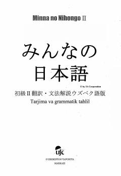

MNO'zbek tilida tayyorlangan yapon tili 2-bosqich asosiy darslik va grammatika qo'llanmasi.
Mazkur o'quv qo'llanma yapon tilini o'rganishni davom ettiruvchilar uchun mo'ljallangan bo'lib, 26-50 darslarni o'z ichiga oladi. Kitobda grammatik tahlillar, tarjimalar va amaliy muloqot uchun zarur bo'lgan dialoglar keltirilgan. Ushbu nashr O'zbekiston-Yaponiya Markazi tomonidan o'zbek tilida so'zlashuvchilar uchun maxsus tayyorlangan.